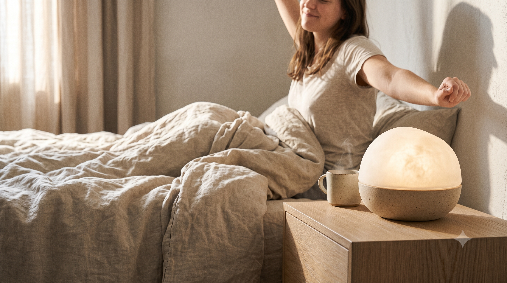
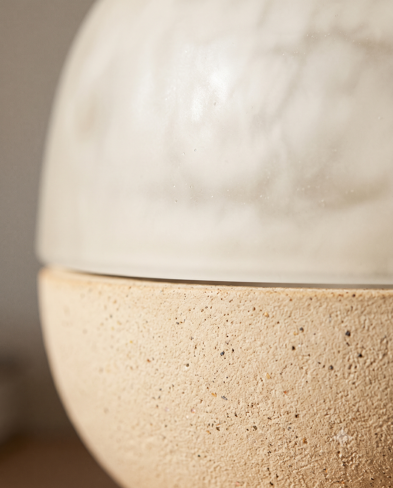
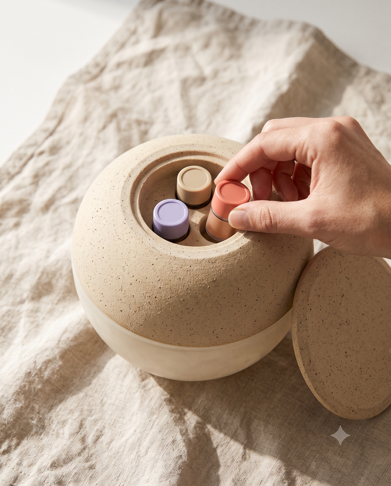
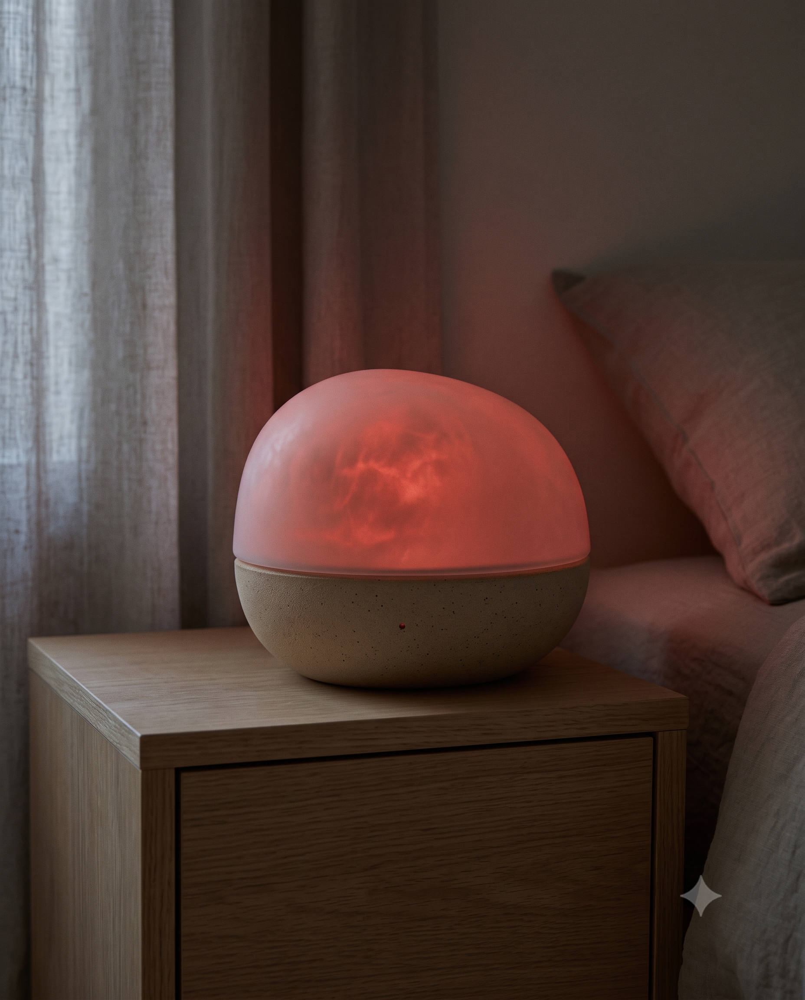
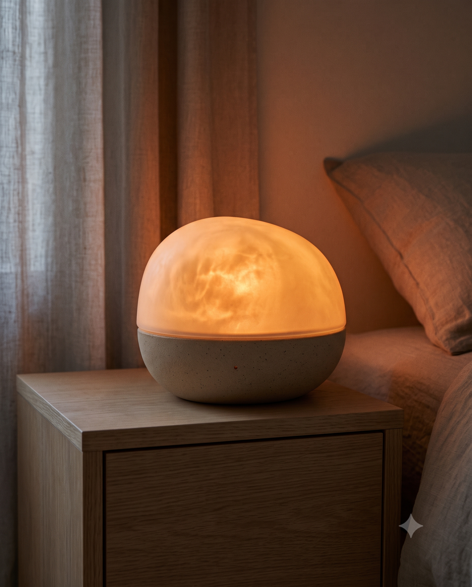
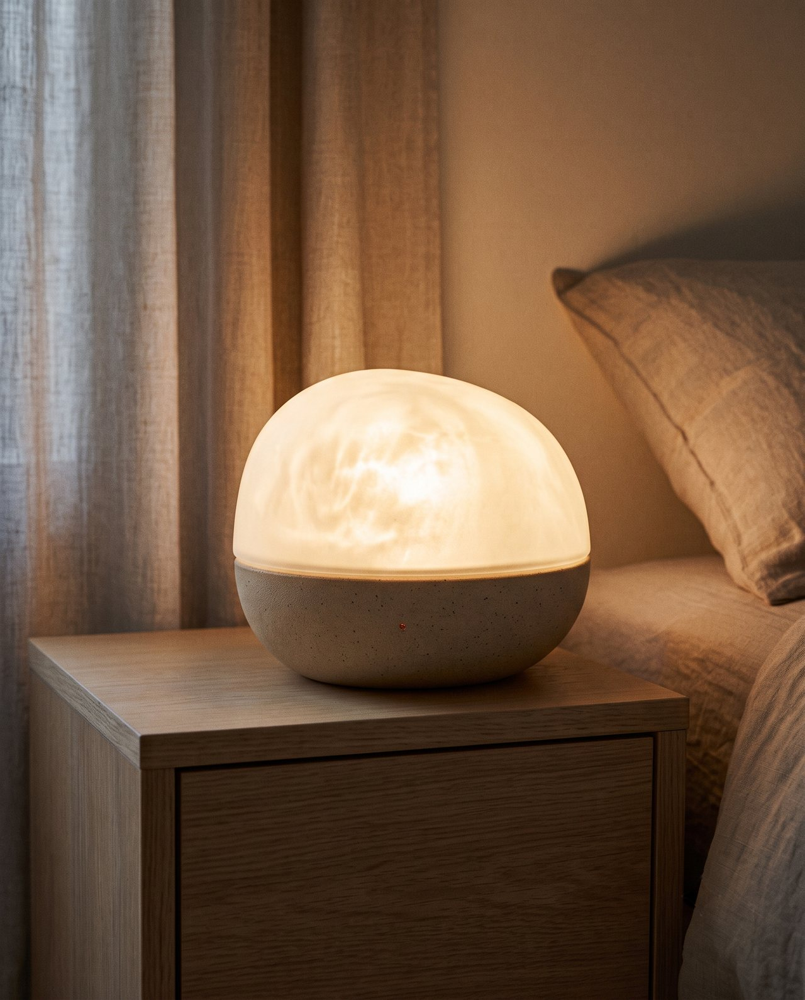
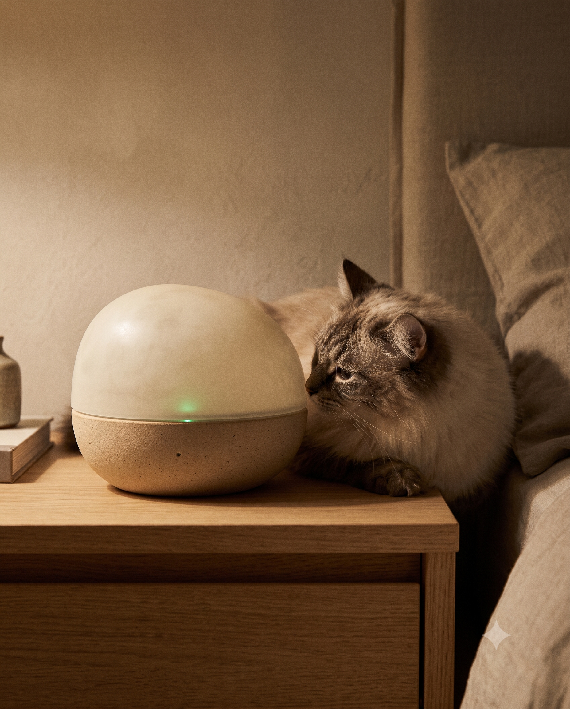
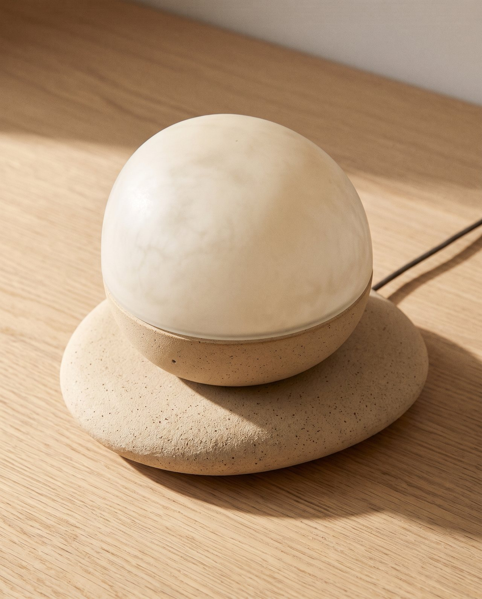
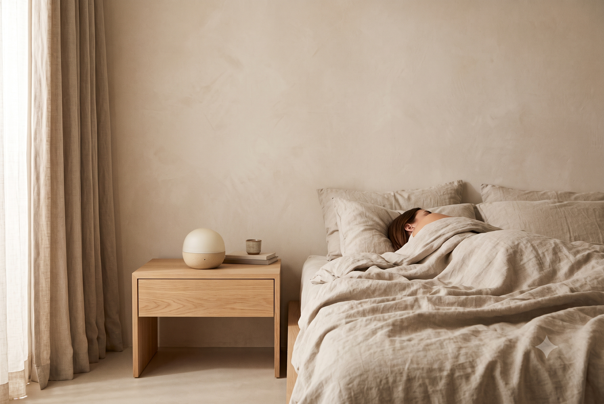
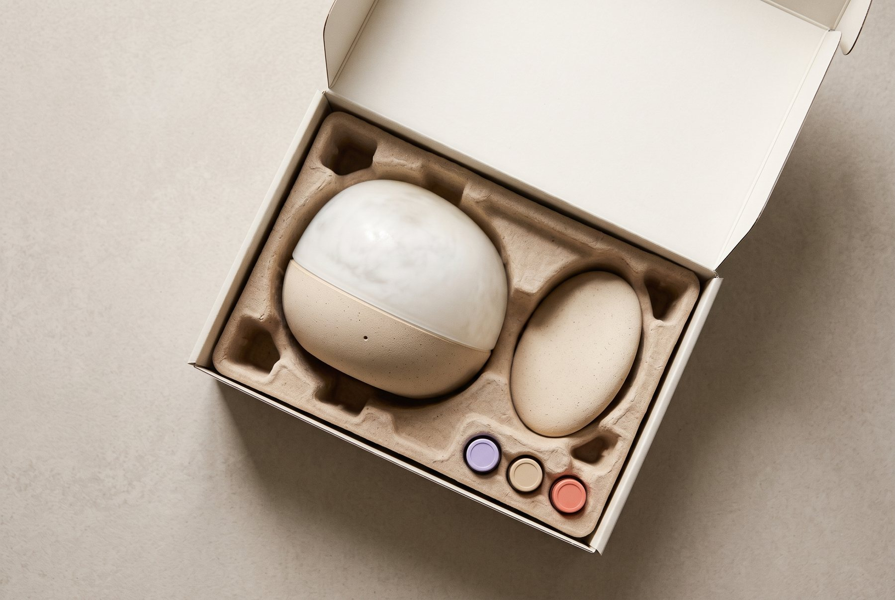

Night · Scent
밤은 향
이완 향과 은은한 조명으로 수면 루틴을 만들고, 수면 단계에 맞춰 향의 종류와 세기를 조절합니다.


슬립테크 · 수면 향 디퓨저 겸 빛 알람
Drift by scent, rise by light.
색상 안개 화이트
카트리지 구독
구독 없이 1회 구매하는 카트리지 단품 세트는 15,900원입니다.
구성: 본체 + 조약돌형 무선 충전 받침 + 향 카트리지 3종 1세트
Drift by scent,
rise by light.
잠들 때는 향으로, 깨어날 때는 빛으로.
꺼져 있어도 침실에 머무는 하나의 오브제.
NOXLUX — 라틴어 Nox(밤)와 Lux(빛)의 합성어
한국인 평균 수면 시간
6시간 58분
OECD 평균 8시간 27분 대비
18% 부족
대한수면연구학회 (2024)
매일 숙면한다는 응답
7%
수면을 방해하는 요인은
심리적 스트레스 62.5%, 신체 피로 49.8%
대한수면연구학회 (2024)
기상 후 피곤하다는 응답
34%
세계 평균은
15%
레즈메드 수면 설문
기상 후 멍한 상태는 평균 15.8분 이어집니다. — 분당서울대병원 (PLOS ONE)
Night · Scent
이완 향과 은은한 조명으로 수면 루틴을 만들고, 수면 단계에 맞춰 향의 종류와 세기를 조절합니다.

Morning · Light
얕은 잠 구간에 빛으로 깨우고, 기상 향으로 아침을 시작합니다.
저전력 레이더로 호흡과 뒤척임을 감지해 수면 단계를 판별합니다. 스마트워치를 차고 잘 필요가 없습니다.
기기 안에서만 처리
데이터는 기기 내부에서만 처리합니다.
원할 때는 끌 수 있게
앱에서 감지 기능을 해제할 수 있습니다.
수면 단계에 따라 이완 · 유지 · 기상 향으로 자동 전환합니다.

이완
라벤더 + 로먼 캐모마일 + 네롤리
잠들 때
유지
라벤더 + 샌달우드 (저농도)
깊은 잠에 든 뒤
기상
커피 + 자몽
깨어날 때

물 없이, 카트리지만
물을 채울 필요 없이 카트리지만 장착하는 무소음 기화식입니다.
본체 안의 카트리지 3개
매트한 세라믹 몸체 안에 카트리지 3개와 센서가 들어 있습니다.
2분 분사, 8분 휴식
이 주기를 반복해 후각이 둔해지는 것을 막고, 카트리지를 더 오래 씁니다.
얕은 잠 구간에 붉은빛에서 흰빛으로, 약 15분간 서서히 밝아집니다.



알람 30분 전부터
얕은 잠 구간을 기다렸다가 빛을 켭니다.
설정 시각의 안전장치
설정 시각까지 깨지 않으면 부드러운 소리 알람이 작동합니다.
카트리지 칩으로 성분을 인식해, 유해 성분이면 작동을 차단합니다.

성분 인식 안전 모드
카트리지 칩으로 성분을 읽고, 유해 성분은 작동하지 않습니다.
초록 표시등
안전 모드가 작동하면 초록 표시등이 켜집니다.
전성분과 안전 등급 표기
카트리지의 전성분과 안전 등급을 표기합니다.
쉽게 넘어지지 않는 구조
반려동물이 있는 공간을 고려한 구조입니다.
알람 07:00 기준 예시입니다.
밤 · 향이 담당Night
잠드는 중
빛: 은은한 호박색 · 향: 이완 (Drift)
깊은 잠 감지
빛: 꺼짐 · 향: 유지 (Deep), 약하게
얕은 잠 기다림
빛: 꺼짐 · 향: 꺼짐
아침 · 빛이 담당Morning
얕은 잠 감지
빛: 서서히 밝게 · 향: 기상 (Bloom)
안전장치
빛: 최대 밝기 · 소리 알람 추가
NOXLUX
어젯밤 수면 리포트
수면 단계
사용한 향
이완 Drift23:30
유지 Deep00:10
기상 Bloom06:48
화면 예시 · 실제 데이터가 아닙니다
앱에서 지난밤의 흐름을 확인합니다.
화면은 07:00 알람 기준 시나리오를 바탕으로 한 예시입니다.
반투명 유리 갓과 손으로 빚은 듯한 스톤웨어 몸체.
강가의 둥근 조약돌을 닮았습니다.




침대 옆 협탁
매트리스와 비슷한 높이
머리에서 약 40cm ~ 1m
센서 창이 누운 사람의 상체를 향하도록
첫 사용 시 앱에서 거리 보정을 1회 진행합니다.
| 제품 | 정가 | 수면 감지 | 빛 알람 | 향 기능 |
|---|---|---|---|---|
| NOXLUX | 249,000원 | 레이더, 수면 단계 판별 | 얕은 잠 구간에 작동 | 수면 단계별 3종 |
| Hatch Restore 3 | $169.99 | 없음 | 설정 시각에 작동 | 없음 |
| Philips SmartSleep Connected |
$219.99 | 없음 | 설정 시각에 작동 | 없음 |
| Google Nest Hub 2세대 |
$99.99 | 레이더, 수면/각성 판별 | 스마트 조명 연동 시 | 없음 |
※ 해외 제품 가격은 미국 정가 기준입니다.
작동 기준
사용자가 설정한 시각
사용자의 실제 수면 단계
기능 범위
빛 알람 또는 디퓨저 중 하나
잠들기부터 기상까지 하나의 기기로
침실 환경
화면 또는 플라스틱 외관
화면 없는 조약돌형 오브제
안전성
반려동물 대응 기능 없음
성분 인식 기반 반려동물 안전 모드
본체는 펄프 받침에 담았습니다. 상자 안쪽에는 슬로건 한 줄만 인쇄했습니다.

| 제품명 | NOXLUX (녹스룩스) |
|---|---|
| 카테고리 | 슬립테크 · 수면 향 디퓨저 겸 빛 알람 |
| 크기 | 지름 약 14cm, 높이 약 11cm |
| 색상 | 안개 화이트 · 새벽 베이지 · 한밤 차콜 |
| 상단부 | 우윳빛 반투명 갓, 갓 전체가 은은하게 발광 |
| 하단부 | 매트한 무광 세라믹 질감 몸체, 카트리지 3개와 센서 내장 |
| 향 배출구 | 상단부와 하단부 사이의 가는 슬릿 |
| 수면 감지 | 저전력 레이더 (호흡 · 뒤척임 감지) |
| 향 배출 방식 | 물 없이 카트리지만 장착하는 무소음 기화식 |
| 분사 주기 | 2분 분사 후 8분 휴식 반복 |
| 빛 알람 | 얕은 잠 구간에 붉은빛에서 흰빛으로 약 15분간 점등 |
| 알람 안전장치 | 설정 시각까지 깨지 않으면 부드러운 소리 알람 작동 |
| 조작 방식 | 갓 가볍게 터치: 조명 켜기 / 길게 누르기: 알람 끄기 |
| 충전 방식 | 조약돌형 무선 충전 받침 (USB-C), 본체 보조 배터리 내장 |
| 개인정보 보호 | 카메라와 마이크 미탑재, 데이터는 기기 내부에서만 처리 |
| 반려동물 안전 | 전성분과 안전 등급 표기, 안전 모드 작동 시 초록 표시등 점등 |
| 구성 | 본체, 조약돌형 무선 충전 받침, 향 카트리지 3종 |
체험단 모집 예정
아직 등록된 후기가 없습니다.
NOXLUX와 함께할 체험단을 곧 모집합니다.
물 없이 카트리지만 장착하는 무소음 기화식입니다. 소리는 설정 시각까지 깨지 않았을 때 작동하는 부드러운 소리 알람뿐입니다.
2분 분사 후 8분 휴식을 반복해 카트리지를 더 오래 쓸 수 있도록 했습니다. 정기 구독(월 12,900원)을 선택하면 카트리지 3종 1세트가 매월 배송되고, 구독 없이 단품 세트(15,900원)로도 구매할 수 있습니다.
카트리지 칩으로 성분을 인식해, 유해 성분이면 작동을 차단하는 반려동물 안전 모드가 있습니다. 안전 모드가 작동하면 초록 표시등이 켜지고, 카트리지에는 전성분과 안전 등급을 표기합니다. 쉽게 넘어지지 않는 구조로 설계했습니다.
카메라와 마이크가 없습니다. 저전력 레이더로 호흡과 뒤척임만 감지하며, 데이터는 기기 내부에서만 처리합니다. 앱에서 감지 기능을 해제할 수도 있습니다.
출시 제품은 센서 창이 향하는 사용자 한 명의 수면을 기준으로 작동합니다. 두 사람의 수면을 각각 감지하고, 먼저 일어나는 사람 쪽으로만 빛을 비추는 커플 모드는 기술 고도화 이후 단계로 계획하고 있습니다.
Drift by scent,
rise by light.